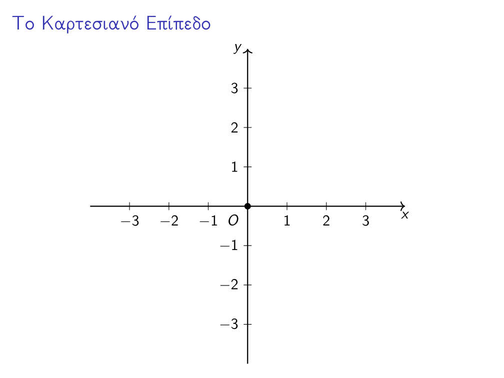
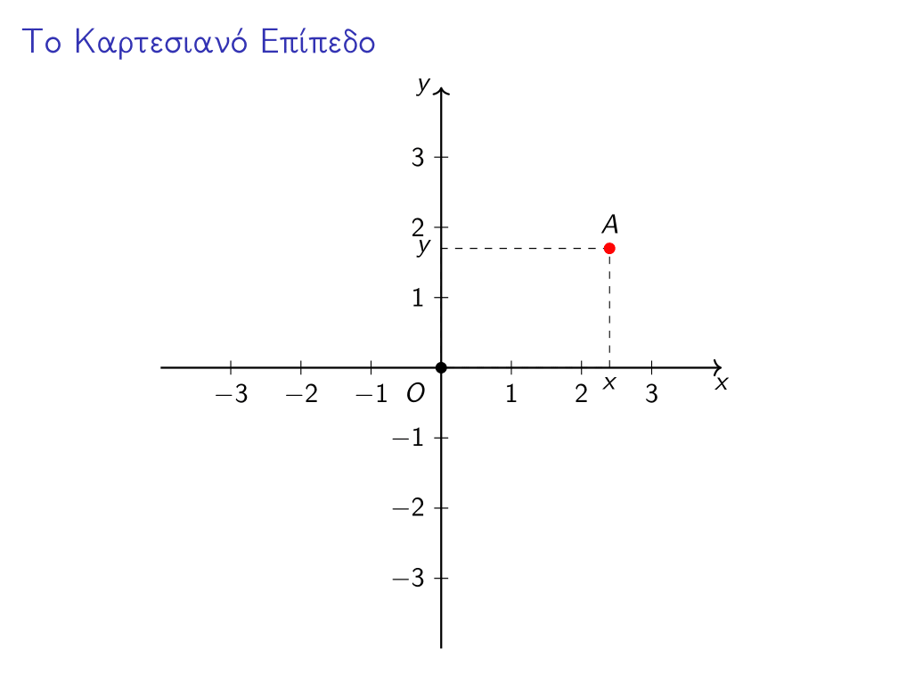
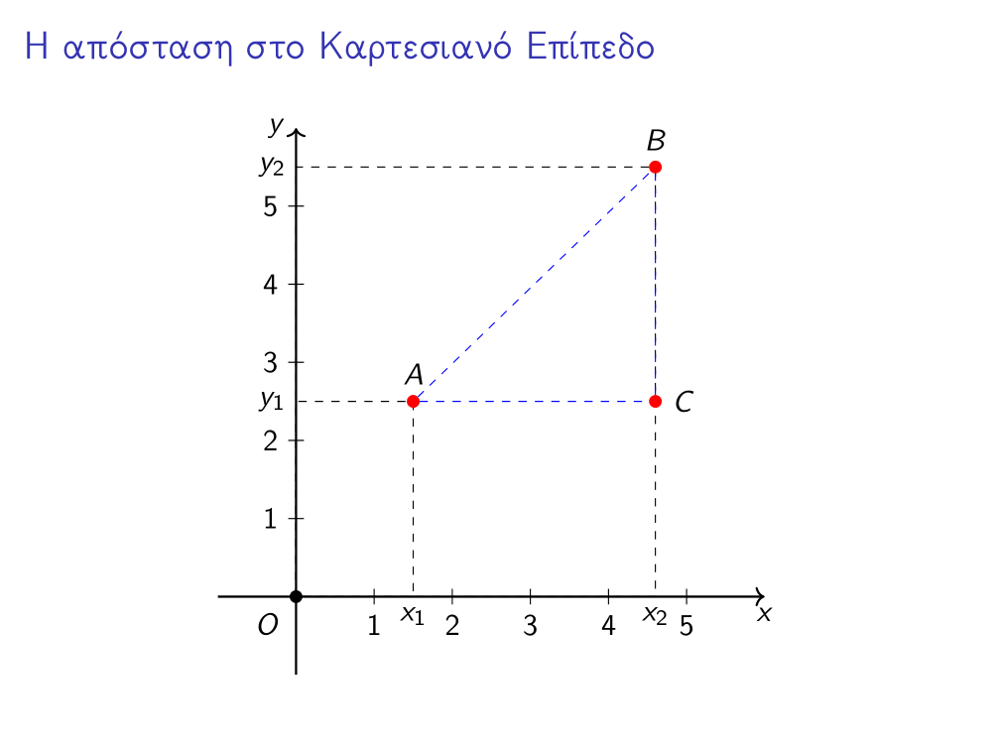
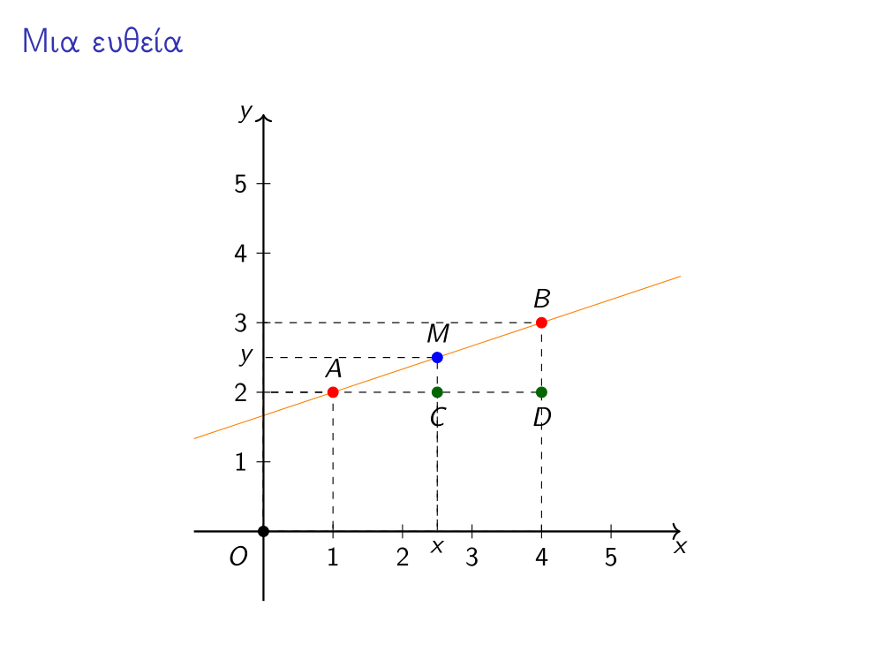
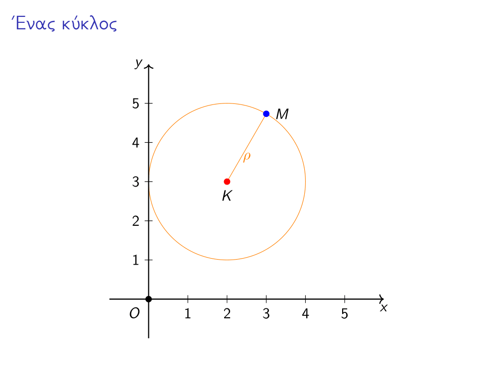

Κατασκευαστικές… αδυναμίες#
Ο πίνακας Παραδοσιακή Ρώσικη αυλή του Vasily Polenov.#
Έχουμε ακούσει πολλές φορές να μιλάνε για τον τετραγωνισμό του κύκλου ως κάτι το αδύνατο - και για την περικύκλωση του τετραγώνου ως κάτι εφικτό - αλλά, γιατί είναι αδύνατο; Δηλαδή, αν πάρουμε έναν κύκλο με εμβαδόν 5 τετραγωνικά, δε μπορούμε να κάνουμε κι ένα τετράγωνο με εμβαδό επίσης 5 τετραγωνικά;
Ίσως και όχι…
Ποια ήταν τα τρία «αδύνατα» προβλήματα;#
Αρχικά, ίσως πρέπει να πούμε δυο λόγια για αυτά τα τρία διάσημα και αδύνατα προβλήματα της αρχαιότητας.
Η τριχοτόμηση μιας γωνίας#
Το πρόβλημα αυτό έχει ως εξής:
Δεδομένης τυχούσας γωνίας :math:`theta ` , να κατασκευαστεί με κανόνα και διαβήτη μία τριχοτόμηση της γωνίας.
Με άλλα λόγια, για μία αυθαίρετη γωνία, πρέπει να βρούμε έναν τρόπο να κατασκευάσουμε χρησιμοποιώντας αποκλειστικά κανόνα και διαβήτη δύο ευθείες που να χωρίζουν την αρχική γωνία σε τρεις ίσες γωνίες (αυτή η κατασκευή λέγεται τριχοτόμηση). Προφανώς, η δυσκολία έγκειται στο να γίνει η παραπάνω κατασκευή με τον περιορισμό να μη χρησιμοποιηθούν άλλα γεωμετρικά όργανα πέρα από τον κανόνα και τον διαβήτη. Ειδάλλως, όποια γωνία κι αν μας δώσουν, μπορούμε να κάνουμε μία διαίρεση με το τρία (3), να πάρουμε το μοιρογνωμώνιό μας και να σχεδιάσουμε τις δύο ευθείες που χρειαζόμαστε - βέβαια, ίσως αυτό δεν είναι και απόλυτα ακριβές, όπως θα δούμε παρακάτω.
Ο τετραγωνισμός του κύκλου#
Γνωστό και μη εξαιρετέο πρόβλημα, έχει επιβιώσει ως σήμερα ως έκφραση που υποδηλώνει ότι κάτι είναι αδύνατο. Το εν λόγω πρόβλημα έχει ως εξής:
Δεδομένου ενός κύκλου ακτίνας :math:`rho ` , να κατασκευαστεί με κανόνα και διαβήτη ένα τετράγωνο με εμβαδό ίσο με αυτό του κύκλου.
Όπως φαντάζεστε, το πρόβλημά μας είναι και πάλι ότι πρέπει όλα να γίνουν με κανόνα και διαβήτη. Ειδάλλως, αν είχαμε έναν κύκλο με εμβαδό λ.χ. ίσο με \(2\pi\) τ.μ., θα σχεδιάζαμε ένα τετράγωνο με πλευρά \(\sqrt{2\pi}\) . Ωστόσο, όπως θα δούμε παρακάτω, το να κατασκευάσουμε ένα ευθύγραμμο τμήμα με μήκος \(\pi\) έχει αρκετές δυσκολίες.
Ο διπλασιασμός του κύβου (ή το Δήλιο πρόβλημα)#
Επίσης αρκετά γνωστό πρόβλημα, ίσως όχι τόσο όσο το προηγούμενο, το οποίο έχει ως εξής:
</p>
Δεδομένου ενός κύβου ακμής \(a\) , να κατασκευαστεί με τη χρήση κανόνα και διαβήτη ένας άλλος κύβος με διπλάσιο όγκο από τον αρχικό.
Μην τα πολυσυζητάμε, κι εδώ το πρόβλημα μας το δημιουργεί ο περιορισμός του κανόνα και του διαβήτη, αφού, αν έχουμε έναν κύβο με ακμή λ.χ. ίση με \(2\) , άρα όγκο ίσο με \(2^3=8\) , αρκεί να κατασκευάσουμε έναν κύβο με ακμή ίση με \(\sqrt[3]{16}\) .
Το παραπάνω πρόβλημα, μάλιστα, κατά την παράδοση, έχει και μία ενδιαφέρουσα ιστορία. Όταν οι Δήλιοι βρίσκονταν αντιμέτωποι με μία σοβαρή επιδημία η οποία μάστιζε το νησί τους, απευθύνθηκαν στο Μαντείο των Δελφών για να τους δώσει τη γνώμη του Απόλλωνα για το πρόβλημά τους - νησί ευλογημένο από τον Απόλλωνα η Δήλος τότε. Η Πυθία, τους απάντησε ότι, για να γλυτώσουν από τον αφανισμό, έπρεπε να κατασκευάσουν στον θεό Απόλλωνα έναν κυβικό βωμό με όγκο διπλάσιο από αυτόν που είχε ο τωρινός - επίσης κυβικός - βωμός που ήταν αφιερωμένος στον θεό. Κοινώς, τους υποχρέωσε τους Δήλιους η Πυθία.
Η αναλυτική γεωμετρία#
Ως εδώ, όλα καλά. Οι αρχαίοι ημών πρόγονοι δεν είχαν καταφέρει να λύσουν αυτά τα προβλήματα, αλλά ούτε και να καταλήξουν αποφασιστικά και σίγουρα στο ότι δεν επιδέχονται λύση μόνο με κανόνα και διαβήτη. Οριστική απάντηση και στα τρία αυτά ερωτήματα έρχεται να δώσει η σύγχρονη άλγεβρα, παρέα με την αναλυτική γεωμετρία. Γιʹ αυτό, είναι χρήσιμο να συζητήσουμε πρώτα λίγες σημαντικές έννοιες από αυτούς τους δύο τομείς των μαθηματικών, αρχής γενομένης από τη δεύτερη.
Το Καρτεσιανό Επίπεδο#
Πρώτα-πρώτα, τι είναι το Καρτεσιανό Επίπεδο; Ας το δούμε μία στα γρήγορα. Πάρτε ένα σημείο κάπου σε ένα επίπεδο - όπου θέλετε, πραγματικά - και ονομάστε το \(O\) . Στη συνέχεια, επιλέξτε μία ευθεία που να περνάει από αυτό το σημείο - όποια θέλετε - και ονομάστε τη, προσωρινά, \((\epsilon_1)\) . Πάρτε τώρα και μία άλλη ευθεία που να διέρχεται από το \(O\) και να είναι κάθετη στην \((\epsilon_1)\) - θα ονομάσουμε αυτήν την ευθεία, προσωρινά, \((\epsilon_2)\) . Στη συνέχεια, πάρτε το διαβήτη σας και ανοίξετε τον όσο θέλετε και μετρήστε πάνω σε κάθε μια από τις ευθείες αυτές, ξεκινώντας από το σημείο \(O\) ίσες αποστάσεις μέχρι να βαρεθείτε (ιδανικά, δε θα βαρεθείτε ποτέ και θα έχετε σχεδιάσει έτσι άπειρες ισαπέχουσες γραμμούλες σε κάθε ευθεία). Στη συνέχεια, ξεκινήστε από το σημείο \(O\) και, κινούμενες/οι επί της \((\epsilon_1)\) αρχίστε να αριθμείτε τις γραμμούλες που σχεδιάσατε ( \(1,2,3,\ldots\) ). Έπειτα, επιστρέψτε στο \(O\) και πάλι κινούμενες/οι επί της \((\epsilon_1)\) , αλλά προς την αντίθετη κατεύθυνση, αρχίστε να αριθμείτε τις γραμμούλες με αρνητικούς αριθμούς αυτή τη φορά ( \(-1,-2,-3,\ldots\) ). Επαναλάβετε για την \((\epsilon_2)\) .
Καλώς εχόντων των πραγμάτων, θα έχετε φτιάξει κάτι σαν αυτό εδώ - ίσως χρειαστεί να στρίψετε το χαρτί σας ή/και να το κοιτάξετε από την πίσω μεριά για να είναι ίδιο:

Το Καρτεσιανό Επίπεδο.#
Όπως, ίσως, θα παρατηρήσατε, αντί για \((\epsilon_1)\) και \((\epsilon_2)\) , προτιμήσαμε να ονομάσουμε τις δύο ευθείες μας \(x\) και \(y\) . Αυτό είναι καθαρά θέμα προτίμησης - και μαθηματικής παράδοσης - οπότε δε χρειάζεται να σας απασχολήσει ιδιαίτερα. Τώρα, αν πάρουμε ένα οποιοδήποτε σημείο πάνω στο επίπεδο, τότε, φέρνοντας κάθετες από αυτό το σημείο προς τις δύο ευθείες - που από εδώ κι εμπρός θα τις αποκαλούμε «άξονες» - βλέπουμε ότι το σημείο αυτό αντιστοιχίζεται σε δύο αριθμούς (ένα σε κάθε άξονα), όπως ακριβώς και στο παρακάτω σχήμα:
</p>

Ένα σημείο στο Καρτεσιανό Επίπεδο.#
Είναι σχεδόν προφανές ότι κάθε ένα σημείο θα αντιστοιχίζεται σε ένα ζεύγος αριθμών \((x,y)\) , καθώς και ότι κάθε τέτοιο ζεύγος συντεταγμένων καθορίζει ακριβώς ένα σημείο. Διαισθητικά, το \(x\) μας λέει πόσο έχουμε κινηθεί κατά μήκος του άξονα \(x\) , ενώ το \(y\) μας λέει πόσο έχουμε κινηθεί κατά μήκος του άξονα \(y\) . Έτσι, στο Καρτεσιανό επίπεδο, κάθε σημείο αναπαρίσταται από ένα ζεύγος αριθμών \((x,y)\) . Μάλιστα, τους αριθμούς \(x,y\) τους λέμε συντεταγμένες του σημείο \(A\) και, ειδικότερα, το \(x\) τετμημένη και το \(y\) τεταγμένη του σημείου \(A\) .
Απόσταση στο Καρτεσιανό Επίπεδο#
Τι πιο φυσιολογικό, αφού έχουμε μιλήσει για σημεία, να μιλήσουμε και για αποστάσεις μεταξύ αυτών των σημείων; Εδώ θα μας φανεί απίστευτα χρήσιμο το Πυθαγόρειο Θεώρημα. Ας πάρουμε, για αρχή, δύο σημεία \(A(x_1,y_1)\) και \(B(x_2,y_2)\) . Αυτό που θέλουμε είναι να βρούμε το μήκος του ευθυγράμμου τμήματος \((AB)\) . Για να το πετύχουμε αυτό θα βάλουμε στο «παιχνίδι» και ένα βοηθητικό σημείο, το \(C(x_2,y_1)\) . Ας παρατηρήσουμε τώρα το παρακάτω σχήμα, που συνοψίζει την κατάσταση.

Η απόσταση στο Καρτεσιανό επίπεδο.#
Παρατηρούμε ότι το τρίγωνο \(ABC\) είναι ορθογώνιο, επομένως, από το Πυθαγόρειο Θεώρημα παίρνουμε την εξής όμορφη σχέση:
Επομένως, αρκεί να βρούμε τις αποστάσεις \((AC)\) και \((BC)\) . Αυτό όμως, από το σχήμα είναι εύκολο, αφού \((AC)=|x_2-x_1|\) και \((BC)=|y_2-y_1|\) - βάλαμε τις απόλυτες τιμές γιατί η απόσταση είναι πάντοντε μη αρνητικός αριθμός. Έτσι, δεδομένου ότι \(\|a|^2=a^2\) , έχουμε:
Καμπύλες στο Καρτεσιανό Επίπεδο#
Η Ευκλείδεια γεωμετρία - η γεωμετρία, δηλαδή, του κανόνα και του διαβήτη - έχει ως βασικά της σχήματα την ευθεία και τον κύκλο. Είναι λοιπόν, εύλογο, να αναζητήσουμε μία αναπαράσταση αυτών των δύο γεωμετρικών εννοιών πάνω στο Καρτεσιανό Επίπεδο. Να δούμε, με άλλα λόγια, πώς μπορούμε να αναπαραστήσουμε μία ευθεία και έναν κύκλο χρησιμοποιώντας συντεταγμένες.
Πριν προχωρήσουμε, όμως, σε αυτά τα δύο ειδικά παραδείγματα, ας συζητήσουμε λίγο το γενικότερο πρόβλημα της περιγραφής μιας καμπύλης μέσω συντεταγμένων. Τι είναι μία καμπύλη; Αν το καλοσκεφτούμε, είναι ένα σύνολο από σημεία τα οποία περιγράφονται από κάποια κοινή σχέση/ιδιότητα. Υπό αυτό το πρίσμα, μπορούμε να πούμε ότι μία καμπύλη \(C\) είναι ένα σύνολο της παρακάτω μορφής:
[Σιωπή]
[Κι άλλη σιωπή]
Και τι πάει να πει αυτό; Λοιπόν, ας τα πάρουμε με τη σειρά. Αρχικά, με το \((x,y)\) εννοούμε ότι το σύνολό μας περιέχει στοιχεία της μορφής \((x,y)\) , δηλαδή, σημεία - στο Καρτεσιανό Επίπεδο, πάντα. Με το \(f(x,y)=0\) εννοούμε ότι αυτά τα σημεία - για την ακρίβεια, οι συντεταγμένες τους - ικανοποιούν την εξίσωση \(f(x,y)=0\) για κάποια συνάρτηση (δύο μεταβλητών) \(f(x,y)\) . Για παράδειγμα, μία τέτοια συνάρτηση θα μπορούσε να είναι η \(f(x,y)=2x^3-5y^2+4\) .
Από εδώ και στο εξής, όταν αναφερόμαστε σε μία καμπύλη, αντί να γράφουμε όλο το σύνολο \(\{(x,y)\mid f(x,y)=0\}\) , συνηθίζουμε να γράφουμε απλώς την εξίσωση που την καθορίζει. Έτσι, αντί να γράψουμε:
γράφουμε απλώς \(C: x+y^2=0.\)
Η ευθεία στο Καρτεσιανό Επίπεδο#
Πάμε, τώρα, να βρούμε την εξίσωση που περιγράφει μία ευθεία. Αντί τυπικής απόδειξης, την οποία μπορεί κανείς να βρει σε κάθε βιβλίο αναλυτικής γεωμετρίας (π.χ. Μαθηματικά προσανατολισμού της Βʹ Λυκείου), θα παρουσιάσουμε μία «παραδειγματική» απόδειξη [1]. Ας πάρουμε δύο σημεία πάνω στο επίπεδο, για παράδειγμα τα \(A(1,2)\) και \(B(4,3)\) , τα οποία, όπως ξέρουμε, καθορίζουν μία και μοναδική ευθεία, ας την πούμε \((\epsilon)\) . Ας πάρουμε και ένα ακόμα, αυθαίρετο, σημείο πάνω στην \((\epsilon)\) , το \(M(x,y)\) και ας παρατηρήσουμε το παρακάτω σχήμα:

Μια ευθεία κι ένα σημείο Μ που δεν είναι απαραίτητα το μέσο του ΑΒ…#
Στο παραπάνω σχήμα παρατηρούμε ότι τα τρίγωνα \(AMC\) και \(ABD\) είναι όμοια, επομένως, από το Θεώρημα του Θαλή έχουμε:
Χρησιμοποιώντας τον τύπο της απόστασης που «ανακαλύψαμε» παραπάνω μπορούμε να βρούμε τις τέσσερις αποστάσεις που εμφανίζονται, οπότε έχουμε:
Εδώ έρχεται μία «ζουμερή» και ουσιώδης παρατήρηση. Το \(M(x,y)\) βρίσκεται πάνω στην ευθεία \((\epsilon)\) οπότε, όταν βρίσκεται δεξιά του \(A\) , δηλαδή ότι \(x>1\) , έπεται και ότι \(y>2\) και, αντίστροφα, όταν βρίσκεται αριστερά του \(A\) , δηλαδή ότι \(x<1\) , έπεται και ότι \(y<2\) . Από αυτά συμπεραίνουμε ότι τα \(\|x-1|\) και \(\|y-2|\) είναι ομόσημα, οπότε μπορούμε να τα ξεφορτωθούμε από την παραπάνω σχέση και έτσι να πάρουμε:
Σουλουπώνοντας λίγο τη σχέση, παίρνουμε:
Με τρόπο παρόμοιο με τον παραπάνω μπορούμε να αποδείξουμε το εξής:
Μία καμπύλη στο Καρτεσιανό Επίπεδο είναι ευθεία αν και μόνον αν περιγράφεται από μία εξίσωση της μορφής :math:`Ax+By+C=0 ` , με :math:`Aneq0 ` ή :math:`Bneq0 ` .
Οι περιορισμοί για τα \(A,B\) προκύπτουν κατά την τυπική απόδειξη του παραπάνω ισχυρισμού, που, όπως είπαμε, δεν είναι ο στόχος μας να παρουσιάσουμε.
Ο κύκλος στο Καρτεσιανό Επίπεδο#
Για τον κύκλο θα παρουσιάσουμε άλλη μία «παραδειγματική» απόδειξη, η οποία κινείται σε παρόμοιο μήκος κύματος με την προηγούμενη - για την πλήρη απόδειξη, μπορείτε και πάλι να συμβουλευτείτε το βιβλίο των Μαθηματικών Προσανατολισμού της Βʹ Λυκείου. Ας πάρουμε έναν κύκλο \((C)\) με κέντρο \(K(2,3)\) και ακτίνα \(\rho=2\) και ας πάρουμε, και πάλι, ένα σημείο \(M(x.y)\) πάνω στον κύκλο. Όλα τα παραπάνω μπορούμε να τα δούμε και στο ακόλουθο σχήμα:

Ένας κύκλος…#
Αφού το \(M\) είναι σημείο του κύκλου, πρέπει να απέχει από το κέντρο του απόσταση \(\rho=2\) . Έτσι, πρέπει να ισχύει:
Παίζοντας λίγο με την εξίσωση - υψώνουμε στο τετράγωνο, αναπτύσσουμε τις ταυτότητες και τα μεταφέρουμε όλα στο ένα μέλος - παίρνουμε:
Όπως και στην προηγούμενη περίπτωση - με παρόμοιο τρόπο - μπορούμε να αποδείξουμε το εξής:
Μία καμπύλη του Καρτεσιανού Επιπέδου είναι κύκλος αν και μόνο αν περιγράφεται από μία εξίσωση της μορφής :math:`x^2+y^2+Ax+By+C=0 ` , με :math:`A^2+B^2-4C>0 ` .
Όπως και προηγουμένως, η πλήρης απόδειξη δε θα μας απασχολήσει ιδιαίτερα. Πριν συνεχίσουμε, να αναφέρουμε και ότι, αν μας δοθεί ένας κύκλος με εξίσωση:
τότε το κέντρο του είναι το σημείο \(K\left(-\frac{A}{2},-\frac{B}{2}\right)\) και η ακτίνα του ο αριθμός \(\rho=\sqrt{\frac{A^2+B^2-4C}{4}}\) .
Το κατασκευάσιμο επίπεδο#
Όπως φτιάξαμε για όλο το επίπεδο ένα μοντέλο που βασίζεται σε αριθμούς, εξισώσεις και τα συναφή αλγεβρικά στοιχεία, έτσι μπορούμε να κάνουμε και για το τμήμα του επιπέδου που κατασκευάζεται με κανόνα και διαβήτη, πράγμα που θα μας φανεί ιδιαίτερα χρήσιμο στην ανάλυσή μας για τα τρία αδύνατα προβλήματα της αρχαιότητας.
Οι κατασκευάσιμοι αριθμοί#
Ξέρουμε τους φυσικούς αριθμούς, ξέρουμε τους ακεραίους αριθμούς, ξέρουμε τους ρητούς, ξέρουμε τους πραγματικούς, ξέρουμε τους μιγαδικούς, ξέρουμε τόσους, τέλος πάντων! Ποιοι είναι αυτοί οι κατασκευάσιμοι αριθμοί;!
Η αλήθεια είναι ότι δεν είναι κάποιοι καινούργιοι αριθμοί παρά ένα υποσύνολο των πραγματικών αριθμών που, για εμάς, έχουν κάποιες ενδιαφέρουσες ιδιότητες. Η ιδέα είναι ότι οι κατασκευάσιμοι αριθμοί είναι εκείνοι που μπορούν να «κατασκευαστούν» πάνω στην ευθεία των πραγματικών αριθμών χρησιμοποιώντας μόνο κανόνα και διαβήτη. Θα δώσουμε εδώ έναν αναδρομικό ορισμό [2] του συνόλου των κατασκευάσιμων αριθμών τον οποίο και θα συζητήσουμε παρακάτω:
</p>
</p>
</p>
Τι μας λέει αυτός ο ορισμός για τα στοιχεία του \(\mathcal{K}\) ; Αρχικά, μας λέει ότι το \(1\) είναι κατασκευάσιμος αριθμός. Στη συνέχεια, αφού \(0=1-1\) , και το \(0\) είναι κατασκευάσιμος αριθμός. Επίσης, αφού \(2=1+1\) , και το \(2\) είναι κατασκευάσιμος αριθμός. Ομοίως, όλοι οι φυσικοί αριθμοί είναι κατασκευάσιμοι. Αν τώρα πάρουμε έναν φυσικό αριθμό \(n\) , και ο \(-n=0-n\) είναι κατασκευάσιμος, ως διαφορά κατασκευάσιμων. Επίσης, αν πάρουμε ένα κλάσμα \(m/n\) , τότε είναι κατασκευάσιμο ως πηλίκο κατασκευάσιμων, μιας και οι \(m,n\) είναι ακέραιοι, άρα κατασκευάσιμοι. Δηλαδή, ως τώρα, έχουμε σίγουρο ότι όλοι οι ρητοί αριθμοί είναι κατασκευάσιμοι, άρα οι κατασκευάσιμοι αριθμοί είναι αρκετά «πολλοί» με διάφορες έννοιες - για περισσότερα, εδώ.
Ωστόσο, δεν μένουμε μόνο εκεί, γιατί έχουμε και τετραγωνικές ρίζες στο παιχνίδι. Αν πάρουμε έναν ρητό αριθμό \(q\) , τότε και ο \(\sqrt{q}\) θα είναι κατασκευάσιμος, άρα οι κατασκευάσιμοι αριθμοί είναι γνήσιο υπερσύνολο των ρητών - εντούτοις, δεν είναι πιο πολλοί σε πλήθος, αλλά αυτό δεν είναι της παρούσης. Οπότε, έχουμε μέσα στο \(\mathcal{K}\) αρκετά πολλούς αριθμούς, συμπεριλαμβανομένων όλων των ρητών και κάποιων αρρήτων.
Εδώ, λοιπόν, προκύπτει ένα άλλο ερώτημα. Μήπως \(\mathcal{K}=\mathbb{R}\) ; Μήπως, δηλαδή, όλοι οι πραγματικοί αριθμοί είναι κατασκευάσιμοι; Η απάντηση εδώ είναι αρνητική και έχει άμεση σχέση με τα τρία προβλήματα που εξετάζουμε. Πριν όμως τη δώσουμε, να παρατηρήσουμε ότι, αν ένας αριθμός \(x\) δεν είναι κατασκευάσιμος, τότε και ο \(y=\frac{m}{n}x\) δεν είναι κατασκευάσιμος για \(m,n\) ακεραίους με \(n\neq0\) . Πράγματι, αν, προς άτοπο, ο \(y\) ήταν κατασκευάσιμος, τότε θα ήταν και ο \(ny\) ως γινόμενο κατασκευάσιμων, άρα και ο \(ny/m\) ως πηλίκο κατασκευάσιμων. Όμως \(\frac{ny}{m}=x\) , άρα ο \(x\) θα ήταν κατασκυεάσιμος, άτοπο. Έτσι, βρίσκοντας έναν μη κατασκευάσιμο αριθμό, βρίσκουμε αμέσως άπειρους μη κατασκευάσιμους αριθμούς.
Η ιδέα των κατασκευάσιμων αριθμών γενικεύεται αρκετά στην άλγεβρα, αλλά αυτή η γενίκευση δεν είναι της παρούσης [3].
Οι κατασκευάσιμες ευθείες και οι κατασκευάσιμοι κύκλοι#
Επιστρέφουμε για λίγο στο Καρτεσιανό Επίπεδο για να παίξουμε με κάποια άλλα σημεία, τα οποία θα ονομάσουμε κατασκευάσιμα:
Ένα σημείο :math:`M(x,y) ` του Καρτεσιανού Επιπέδου λέγεται κατασκευάσιμο αν και οι δύο συντεταγμένες του είναι κατασκευάσιμοι αριθμοί, δηλαδή αν :math:`xinmathcal{K} ` και :math:`yinmathcal{K} ` .
Επίσης, για δική μας ευκολία, το σύνολο όλων των κατασκευάσιμων σημείων θα το ονομάζουμε κατασκευάσιμο επίπεδο.
Πάνω στο κατασκευάσιμο επίπεδο, μπορούμε προφανώς να μιλήσουμε για κατασκευάσιμες ευθείες και κατασκευάσιμους κύκλους. Για την ακρίβεια, δίνουμε, προς το παρόν, αυτούς τους «δοκιμαστικούς» ορισμούς:
Μία ευθεία του Καρτεσιανού Επιπέδου θα λέμε ότι είναι κατασκευάσιμη αν περιέχει τουλάχιστον δύο κατασκευάσιμα σημεία.
Ένας κύκλος του Καρτεσιανού Επιπέδου θα λέμε ότι είναι κατασκευάσιμος αν το κέντρο του είναι κατασκευάσιμο σημείο και η ακτίνα του είναι κατασκευάσιμος αριθμός.
Πριν προχωρήσουμε σε αυστηρότερους ορισμούς, ας κάνουμε λίγες παρατηρήσεις για τα κατασκευάσιμα σχήματα, όπως τα έχουμε ορίσει ως τώρα. Αρχικά, μία ευθεία που είναι κατασκευάσιμη περιέχει (τουλάχιστον) δύο κατασκευάσιμα σημεία. Δηλαδή, αν η ευθεία έχει εξίσωση \(Ax+By+C=0\) , τότε υπάρχουν δύο σημεία \(M(a,b),N(c,d)\) που επαληθεύουν την εξίσωση της ευθείας και οι \(a,b,c,d\) είναι κατασκευάσιμοι αριθμοί. Έτσι , έχουμε το σύστημα των δύο παρακάτω εξισώσεων:
Θυμηθείτε ότι έχουμε πει ότι στην εξίσωση κάθε ευθείας, ένας εκ των \(A,B\) είναι διάφορος του μηδενός. Χωρίς βλάβη της γενικότητας, ας πούμε ότι είναι ο \(A\) και ας διαιρέσουμε και τις δύο εξισώσεις με αυτόν, οπότε και παίρνουμε το ακόλουθο σύστημα:
Όπου, έχουμε ορίσει για ευκολία \(\beta=B/A,\ \gamma=C/a.\) Τώρα, το παραπάνω είναι ένα 2x2 γραμμικό σύστημα με συντελεστές που είναι κατασκευάσιμοι αριθμοί. Ας σκεφτούμε τώρα τι πράξεις κάνουμε όταν λύνουμε ένα γραμμικό σύστημα; Προσθέσεις, αφαιρέσεις, πολλαπλασιασμούς και διαιρέσεις. Επομένως, δεδομένου ότι όλοι οι συντελεστές του συστήματος είναι κατασκευάσιμοι αριθμοί, έπεται ότι και η λύση του συστήματος θα είναι ένα ζεύγος κατασκευάσιμων αριθμών. Συνεπώς, οι \(B/A\) και \(C/A\) είναι κατασκευάσιμοι αριθμοί, και άρα η ευθεία έχει εξίσωση:
με κατασκευάσιμους συντελεστές. Γενικότερα, μία κατασκευάσιμη ευθεία έχει εξίσωση που μπορεί - ενδεχομένως, όπως και παραπάνω, μετά από κάποια πράξη - να γραφεί έτσι ώστε όλοι της οι συντελεστές να είναι κατασκευάσιμοι. Ισχύει, μάλιστα και το αντίστροφο: κάθε εξίσωση ευθείας που έχει κατασκευάσιμους συντελεστές αντιστοιχεί σε κατασκευάσιμη ευθεία. Για να το δούμε αυτό, ας πάρουμε μία εξίσωση:
με τουλάχιστον έναν εκ των \(A,B\) μη μηδενικό και τους \(A,B,C\) κατασκευάσιμους. Ας υποθέσουμε και πάλι ότι \(A\neq0\) χωρίς βλάβη της γενικότητας, οπότε και μπορούμε να γράψουμε την παραπάνω εξίσωση στη μορφή:
Για \(y=0\) βλέπουμε ότι η ευθεία διέρχεται από το σημείο \(M(C/A, 0)\) που είναι κατασκευάσιμο, ενώ για \(y=1\) βλέπουμε ότι η ευθεία διέρχεται από το σημείο \(N(B/A+C/A, 1)\) που είναι διαφορετικό του \(M\) και επίσης κατασκευάσιμο. Επομένως, η ευθεία διέρχεται από (τουλάχιστον) δύο κατασκευάσιμα σημεία, άρα είναι πράγματι κατασκευάσιμη.
Αναλόγως, αν πάρουμε έναν κατασκευάσιμο κύκλο, τότε το κέντρο του είναι κατασκευάσιμο, άρα οι αριθμοί \(A,B\) είναι κατασκευάσιμοι. Επιπρόσθετα, από τη σχέση \(\rho=\sqrt{\frac{A^2+B^2-4C}{4}}\) παίρνουμε ότι:
Αφού οι \(A,B,\rho\) είναι κατασκευάσιμοι, έπεται ότι και ο \(C\) είναι κατασκευάσιμος, άρα ένας κατασκευάσιμος κύκλος έχει εξίσωση με συντελεστές επίσης κατασκευάσιμους - κι εδώ ισχύει και το αντίστροφο.
Επόμενη παρατήρηση που έχουμε να κάνουμε είναι ότι το σημείο τομής δύο κατασκευάσιμων ευθειών είναι κατασκευάσιμο. Πράγματι, για να βρούμε το σημείο τομής δύο κατασκευάσιμων ευθειών πρέπει να λύσουμε το \(2\times2\) γραμμικό σύστημα:
Όπως και προηγουμένως, αφού οι συντελεστές είναι όλοι τους κατασκευάσιμοι, έπεται ότι και η λύση του συστήματος είναι ένα κατασκευάσιμο σημείο του επιπέδου.
Ομοίως, το/τα σημείο/α τομής ενός κατασκευάσιμου κύκλου και μιας κατασκευάσιμης ευθείας είναι επίσης κατασκευάσιμο. Πράγματι, για να το/τα βρούμε πρέπει να λύσουμε ένα σύστημα της μορφής:
Για να το λύσουμε, πρέπει να κάνουμε προσθέσεις, αφαιρέσεις, διαιρέσεις, πολλαπλασιασμούς και, ενδεχομένως , να πάρουμε και κάποιες τετραγωνικές ρίζες, επομένως, αφού οι συντελεστές είναι όλοι τους κατασκευάσιμοι, πρέπει και η/οι λύση/εις να είναι κατασκευάσιμη/ες.
Τέλος, το/α σημείο/α τομής δύο κύκλων είναι κατασκευάσιμο/α. Πράγματι, για να το/α βρούμε πρέπει να λύσουμε ένα σύστημα της μορφής:
Ωστόσο, αφαιρώντας κατά μέλη τις δύο εξισώσεις παίρνουμε το σύστημα:
το οποίο, όπως είδαμε παραπάνω, έχει λύση/εις που είναι κατασκευάσιμη/ες.
Κάποιος αρκετά προσεκτικός, ίσως έχει να επισημάνει μία παρατυπία που έχουμε κάνει σε αυτό το σημείο. Μιλάμε για κατασκευάσιμες ευθείες και κύκλους, ωστόσο επιτρέπουμε στις ευθείες αυτές και τους κύκλους να ζουν σε όλο το Καρτεσιανό Επίπεδο. Για να γίνουμε πιο συγκεκριμένοι, είπαμε ότι μία ευθεία είναι κατασκευάσιμη αν περιέχει τουλάχιστον δύο κατασκευάσιμα σημεία. Ωστόσο, αυτό σημαίνει ότι μπορεί να περιέχει και σημεία που δεν είναι κατασκευάσιμα - SPOILER ALERT! τα μη κατασκευάσιμα σημεία είναι πολύ περισσότερα από τα κατασκευάσιμα. Έτσι, για να αποφύγουμε να βάλουμε και αυτά τα «κακά» σημεία, δίνουμε τους εξής ορισμούς για τα κατασκευάσιμα σχήματα:
Μία κατασκευάσιμη ευθεία είναι το σύνολο των κατασκευάσιμων σημείων μίας ευθείας του Καρτεσιανού Επιπέδου με εξίσωση :math:`Ax+By+C=0 ` με :math:`Aneq0 ` ή :math:`Bneq0 ` , όπου :math:`A,B,Cinmathcal{K} ` .
Ένας κατασκευάσιμος κύκλος είναι το σύνολο των κατασκευάσιμων σημείων ενός κύκλου του Καρτεσιανού Επιπέδου με εξίσωση :math:`x^2+y^2+Ax+By+C=0 ` , με :math:`A^2+B^2-4C>0 ` , όπου :math:`A,B,Cinmathcal{K} ` .
Κατασκευές με κανόνα και διαβήτη#
Ήρθε, επιτέλους, η ώρα να μιλήσουμε για κατασκευές με κανόνα και διαβήτη! Πρακτικά, όλα όσα κάναμε ήταν ένας τρόπος να τυποποιήσουμε σε μία θεωρία ό,τι έχει να κάνει με αυτού του είδους τις κατασκευές. Αν το καλοσκεφτούμε, θα δούμε ότι κάθε «ενδιαφέρον» σημείο στην Ευκλείδεια γεωμετρία οφείλει να είναι κατασκευάσιμο. Πράγματι, αν απλώς πάρουμε το μολύβι μας και πετάμε σημεία το ένα μετά το άλλο πάνω στο χαρτί μας, τότε δεν μπορούμε να ξέρουμε για κανένα από αυτά αν έχει κάποια ιδιότητα - κάποια σχέση - που να αφορά αυτό και κάποια από τα άλλα σημεία του επιπέδου. Έτσι, πέρα, προφανώς από το πρώτο σημείο μας, που παίζει τον ρόλο της αρχής του Κατασκευάσιμου Επιπέδου \(O(0,0)\) και του δεύτερου σημείου, που καθορίζει τους άξονες και την κοινή τους μονάδα [4], όλα τα άλλα «ενδιαφέροντα» σημεία προκύπτουν ως σημεία τομής μεταξύ δύο ευθειών ή μίας ευθείας και ενός κύκλου ή δύο κύκλων, μιας και τα μόνα σχήματα που μπορούμε άμεσα να σχεδιάσουμε με κανόνα και διαβήτη είναι η ευθεία και ο κύκλος.
Όπως, όμως, είδαμε παραπάνω, τα σημεία τομής μίας κατασκευάσιμης ευθείας και ενός κατασκευάσιμου κύκλου ή δύο κατασκευάσιμων ευθειών ή δύο κατασκεάσιμων κύκλων είναι κι αυτά κατασκευάσιμα, οπότε, χρησιμοποιώντας μόνον κανόνα και διαβήτη, μπορούμε να «εξερευνήσουμε» μόνο το κατασκευάσιμο επίπεδο και όχι όλο το Καρτεσιανό Επίπεδο. Εδώ ωφείλουμε να κάνουμε μία στάση, καθώς μόλις τώρα δείξαμε ότι με κατασκευές με κανόνα και διαβήτη δεν μπορούμε παρά να σχεδιάσουμε ένα, μόνο, τμήμα του επιπέδου - αν θεωρήσουμε ότι το Καρτεσιανό Επίπεδο ανταποκρίνεται πλήρως στη διαίσθησή μας για το επίπεδο. Επομένως, βλέποντας με τα μάτια της Ευκλείδειας Γεωμετρίας ή, πιο σωστά, με τα μάτια που μας δίνουν ο κανόνας και ο διαβήτης, χάνουμε σημεία από το επίπεδο - τα περισσότερα, μάλιστα.
Έχοντας αυτό κατά νου, ίσως τελικά να μην είναι παράλογο που κάποιες κατασκευές αποδεικνύονται, τελικά, αδύνατες. Διότι, αν το καλοσκεφτούμε, είναι αδύνατες διότι δεν υπάρχει συστηματικός τρόπος να εξασφαλίσουμε ότι το σημείο ή τα σημεία που πρέπει να σχεδιάσουμε για να πραγματοποιήσουμε τις εν λόγω κατασκευές είναι πράγματι κατασκευάσιμα. Έτσι, για παράδειγμα, ενώ είναι εύκολο μόνο με κανόνα και διαβήτη να τριχοτομήσει κανείς μία ορθή γωνία - γιατί είναι επίσης εύκολο να σχεδιάσει κανείς ένα ισόπλευρο τρίγωνο - αυτό από μόνο του δε μας εγγυάται ότι μπορούμε να βρούμε μία τριχοτόμηση για μία πιο «στριφνή» γωνία. Κάπως, λοιπόν, να αρχίζει να φαίνεται μία λογική στις δυσκολίες που είχαν οι αρχαίοι με αυτά τα τρία προβλήματα.
Οι κατασκευάσιμοι αριθμοί revisited#
Μιλήσαμε πριν για τους κατασκευάσιμους αριθμούς και είδαμε πόσο καλά κάναμε, καθώς μας έδωσαν την ευκαιρία να καθορίσουμε ένα αρκετά μικρότερο σύνολο από αυτό του Καρτεσιανού Επιπέδου μέσα στο οποίο ζουν όλες οι γεωμετρικές κατασκευές μας. Μελετώντας περαιτέρω αυτούς τους αριθμούς, ευελπιστούμε τώρα να βρούμε κι άλλα χρήσιμα συμπεράσματα - να βγάλουμε από τη μύγα ξύγκι, που λέμε. Λοιπόν, όπως είχαμε πει και παραπάνω, όλοι οι ρητοί αριθμοί είναι κατασκευάσιμοι καθώς επίσης κι όλες οι τετραγωνικές ρίζες ρητών αριθμών. Επομένως, ο \(\sqrt{2}\) είναι ένας κατασκευάσιμος αριθμός. Τώρα, αφού οι κατασκευάσιμοι αριθμοί είναι κλειστοί ως προς τις συνήθεις πράξεις, όλα τα πολλαπλάσια του \(\sqrt{2}\) με ρητούς καθώς επίσης και οι ακέραιες δυνάμεις του \(\sqrt{2}\) είναι επίσης κατασκευάσιμοι. Κατασκευάσιμες είναι κι όλες οι τετραγωνικές ρίζες των τετραγωνικών ριζών του \(\sqrt{2}\) αφού και η εξαγωγή ρίζας επιτρέπεται εντός των κατασκευάσιμων αριθμών. Και με αυτούς τους αριθμούς μπορούμε να κάνουμε και πάλι ό,τι πράξεις θέλουμε, μαζί με εξαγωγές τετραγωνικών ριζών και πάλι να πέφτουμε μέσα στους κατασκευάσιμους αριθμούς.
Έτσι, ένας αριθμός τόσο άσχημος όσο ο ακόλουθος:
είναι κατασκευάσιμος καθώς προκύπτει από κατασκευάσιμους αριθμούς στους οποίους εφαρμόζουμε, όπως θα λέμε, κατασκευάσιμες πράξεις. Γενικότερα, δεδομένων των ακεραίων αριθμών, οι κατασκευάσιμοι αριθμοί προκύπτουν εύκολα, εφαρμόζοντας πεπερασμένο πλήθος από κατασκευάσιμες πράξεις - και η μονάδα αρκεί για να το πούμε αυτό, αλλά ας κάνουμε τη ζωή μας λίγο πιο εύκολη κι ας ξεκινήσουμε με βάση τους ακεραίους.
Τώρα, ας πάρουμε τον παραπάνω αριθμό κι ας ακολουθήσουμε το μονοπάτι τον κατασκευάσιμων πράξεων που μας οδήγησαν σε αυτόν προς τα πίσω:
Ωραία, αυτό που καταφέραμε ίσως φαίνεται χαζό, αλλά είναι πολύ σημαντικό. Μόλις δείξαμε ότι ο \(a\) που είναι ένας κακάσχημος κατασκευάσιμος αριθμός είναι ρίζα ενός πολυωνύμου. Μάλιστα, το πολυώνυμο που καταλήξαμε δεν είναι ό,τι κι ό,τι, αλλά ένα πολυώνυμο με ακέραιους συντελεστές! Συνεπώς, ο \(a\) είναι αυτό που λέμε αλγεβρικός αριθμός - τους είδαμε πρόσφατα εδώ και παλιότερα εδώ. Μπορούμε, άραγε, να γενικεύσουμε το παραπάνω παράδειγμα και να αποδείξουμε ότι κάθε κατασκευάσιμος αριθμός είναι και αλγεβρικός;
Η απάντηση είναι ναι, αρκεί αν έχουμε τα μάτια μας δεκατέσσερα. Όπως είδατε παραπάνω, αυτό που κάναμε ήταν, σταδιακά, να ξεφλουδίζουμε το κρεμμύδι των πράξεων με τις οποίες είχαν ντυθεί αυτοί οι μικροί ακέραιοι αριθμοί, για να αποκαλύψουμε τον τύπο του πολυωνύμου. Ωστόσο, δεν είναι ότι απλά όπου βλέπαμε ρίζα υψώναμε σε δύναμη, όπου βλέπαμε πολλαπλασιασμό κάναμε διαίρεση κ.λπ. Αντιθέτως, στην περίπτωση που συναντήσαμε τον ακόλουθο αριθμό:
κάναμε ένα σχολικό - πλην όμως, χρήσιμο εδώ - τέχνασμα, έτσι ώστε να φύγει η ρίζα από τον παρονομαστή. Αυτό, γενικά, είναι σημαντικό, καθώς σε άλλη περίπτωση θα αναγκαζόμαστε να φέρουμε τον \(a\) στον παρονομαστή, οπότε και κάθε όνειρό μας να φτάσουμε σε μία πολυωνυμική εξίσωση στο τέλος θα πήγαινε περίπατο. Να προσέξουμε εδώ ότι οι μόνες ρίζες που μπορούμε να εφαρμόσουμε στα πλαίσια των κατασκευάσιμων αριθμών είναι οι τετραγωνικές - όσες φορές θέλουμε, ωστόσο - επομένως, πάντοτε όταν εμφανίζεται μία έκφραση της μορφής:
θα μπορούμε να τη φέρουμε στη μορφή:
Αν, τώρα, στον παρονομαστή κρύβεται κι άλλη ρίζα, θα επαναλάβουμε το παραπάνω βήμα όσες φορές χρειαστεί - θα είναι πεπερασμένες στο πλήθος, άλλωστε - μέχρι να καθαρίσουμε από όλες τις ρίζες.
Προσέχοντας, λοιπόν, μην «κοπούμε», μπορούμε να ξεφλουδίσουμε κάθε κατασκευάσιμο αριθμό, και να αποκαλύψουμε - μετά από αρκετό κλάμα, όπως με τα κρεμμύδια - το πολυώνυμο με ακέραιους συντελεστές του οποίου ο αριθμός μας είναι ρίζα. Έτσι, έχουμε αποδείξει στον αέρα το εξής:
Κάθε κατασκευάσιμος αριθμός είναι και αλγεβρικός.
Αυτό είναι το κλειδί για όσα θα πούμε από εδώ και στο εξής - σχεδόν, έχουμε και λίγα ακόμα να δούμε.
Αποδομώντας τις κατασκευές#
Θα παρουσιάσουμε, επιτέλους, τις αποδείξεις της αδυναμίας κατασκευής των τριών άλυτων προβλημάτων της αρχαιότητας - υπενθυμίζουμε, άλητα στα πλαίσια του παιχνιδιού όπως τα έχουμε πει. Ας ξεκινήσουμε με, ίσως, το διασημότερο εκ των τριών.
Τρίγωνα, τετράγωνα, κύκλοι και γραμμές#
Μπορούμε να τετραγωνίσουμε τον κύκλο; Όχι. Γιατί; Χμμμ, για να δούμε. Το πρόβλημα, όπως είπαμε, συνίσταται στο να κατασκευάσουμε δεδομένου ενός αυθαίρετου κύκλου ένα τετράγωνο με ίσο εμβαδό χρησιμοποιώντας μόνο κανόνα και διαβήτη. Θέλουμε να δείξουμε ότι αυτό είναι αδύνατο, επομένως θα πάρουμε έναν κύκλο όπως μας βολεύει και θα δείξουμε ότι η παραπάνω κατασκευή δεν είναι εφικτή.
Παίρνουμε λοιπόν έναν κύκλο με κέντρο την αρχή των αξόνων και ακτίνα ίση με 1. Σαφώς, αυτός ο κύκλος είναι κατασκευάσιμος και, επίσης σαφώς, έχει εμβαδό ίσο με \(\pi.\) Επομένως, πρέπει να κατασκευάσουμε ένα τετράγωνο με εμβαδό ίσο με \(\pi\) ή, ισοδύναμα, να σχεδιάσουμε ένα ευθύγραμμο τμήμα με πλευρά \(\sqrt{\pi}.\) Για να γίνει αυτό, θα πρέπει να είναι κατασκευάσιμος ο αριθμός \(\sqrt{\pi},\) συνεπώς θα πρέπει να είναι κατασκευάσιμος και ο \(\pi.\) Όπως είπαμε, κάθε κατασκευάσιμος αριθμός είναι και αλγεβρικός, άρα ο \(\pi\) θα πρέπει να είναι και αλγεβρικός.
Μαντέψτε… Δεν είναι - το είδαμε την προηγούμενη εβδομάδα εδώ και μας πήρε κάτι ώρες. Επομένως, μόλις αποδείξαμε ένα ιστορικό αποτέλεσμα: δεν μπορούμε να τετραγωνίσουμε τον κύκλο. Έτσι απλά - τι απλά δηλαδή, αν δούμε πόσο δύσκολο είναι να αποδείξουμε την μη αλγεβρικότητα του \(\pi\) θα αναθεωρήσουμε σύντομα.
Κι ο κύβος ερρίφθη#
Έχουμε σερί με τους τίτλους σε αυτήν την ανάρτηση. Λοιπόν, το επόμενο πρόβλημα που θα λύσουμε - βασικά, θα «λύσουμε», αφού θα δείξουμε ότι δε λύνεται - είναι το Δήλιο πρόβλημα, δηλαδή, το πρόβλημα διπλασιασμού του κύβου. Εδώ δε θα είναι τόσο σύντομη η απόδειξή μας. Ας πάρουμε έναν κύβο με όγκο 1 κυβικό μέτρο, οπότε και θέλουμε να κατασκευάσουμε έναν κύβο με διπλάσιο όγκο, ήτοι 2 κυβικά μέτρα. Ισοδύναμα, πρέπει να κατασκευάσουμε πλευρά μήκους \(\sqrt[3]{2},\) γεγονός που θα δείξουμε ότι δεν είναι εφικτό.
Εδώ, όπως βλέπετε, δε θα δουλέψει το κόλπο που κάναμε παραπάνω, καθώς ο \(\sqrt[3]{2}\) είναι αλγεβρικός, επομένως θα πρέπει να αποδείξουμε απευθείας ότι δεν είναι κατασκευάσιμος, δηλαδή ότι δεν προκύπτει από τους ακεραίους - ή από τη μονάδα - μέσα από πεπερασμένο πλήθος κατασκευάσιμων πράξεων. Ας προσπαθήσουμε να αποδείξουμε το ζητούμενο με απαγωγή σε άτοπο. Έστω, λοιπόν, ότι ο \(\sqrt[3]{2}\) είναι κατασκευάσιμος. Αυτό, όπως έχουμε πει, σημαίνει ότι προκύπτει από ρητούς αριθμούς μέσα από κατασκευάσιμες πράξεις - δηλαδή τις συνήθεις πράξεις μαζί με εξαγωγές ριζών. Μπορούμε τώρα ίσως να σκεφτούμε το παραπάνω λίγο διαφορετικά. Αρχικά, έχουμε στα χέρια μας κάποιους ρητούς αριθμούς, επομένως, όσο κάνουμε προσθέσεις και πολλαπλασιασμούς (και αφαιρέσεις και διαιρέσεις, αλλά δε χρειάζεται να αναφερόμαστε σε αυτές συνέχεια) τόσο παραμένουμε στους ρητούς. Επειδή, σαφώς, ο \(\sqrt[3]{2}\) δεν είναι ρητός - μπορείτε να το αποδείξετε; - σε κάποιο σημείο θα πρέπει να κάνουμε τη μόνη «άρρητη» πράξη μας, που θα είναι κάποια εξαγωγή ρίζας σε κάποιον αριθμό που δεν είναι τετράγωνο ρητού. Έτσι, θα έχουμε πλέον έναν αριθμό που δεν είναι ρητός, έστω \(a_1\) , στον οποίο θα εφαρμόσουμε διάφορες κατασκευάσιμες πράξεις. Όσο αυτές οι πράξεις είναι προσθέσεις και πολλαπλασιασμοί, θα παραμένουμε εντός ενός συνόλου που θα το ονομάσουμε \(\mathbb{Q}[a_1]\) και θα το αποκαλούμε επέκταση του \(\mathbb{Q}\) κατά \(a_1\) και το οποίο θα περιέχει όλα τα γινόμενα και αθροίσματα ρητών μεταξύ τους ή με τον αριθμό \(a_1.\) Τώρα, μπορεί μέσα στο \(\mathbb{Q}[a_1]\) να μην υπάρχει και πάλι ο \(\sqrt[3]{2}\) οπότε και θα χρειαστεί να βγούμε από αυτό το σύνολο κάνοντας κάποτε μία ακόμα εξαγωγή ρίζας, παίρνοντας έναν αριθμό \(a_2\) που να μην είναι στοιχείο του \(\mathbb{Q}[a_1].\) Έτσι, παίρνουμε ένα νέο σύνολο, που θα το ονομάσουμε \(\mathbb{Q}[a_1,a_2]\) το οποίο περιέχει όλους τους ρητούς και όλα τα αθροίσματα και γινόμενα των ρητών καθώς και των αριθμών \(a_1,a_2\) μεταξύ τους.
Συνεχίζοντας με τον παραπάνω τρόπο, σε κάποια φάση θα έχουμε εντοπίσει αριθμούς (άρρητους) \(a_1,\ldots,a_n\) έτσι ώστε ο \(\sqrt[3]{2}\) να βρίσκεται στο σύνολο \(\mathbb{Q}[a_1,\ldots,a_n],\) δηλαδή να προκύπτει μέσα από αθροίσματα και γινόμενα ρητών με τις ρίζες \(a_1,\ldots,a_n,\) όπου κάθε μία τέτοια ρίζα είναι ρίζα κάποιου αριθμού της προηγούμενης επέκτασης. Δηλαδή, το \(a_3\) είναι τετραγωνική ρίζα κάποιου στοιχείου του \(\mathbb{Q}[a_1,a_2]\) κ.ο.κ. Ας υποθέσουμε, σε αυτό το σημείο, ότι οι παραπάνω επεκτάσεις είναι οι λιγότερες δυνατές που χρειάζεται να κάνουμε για να ξεκινήσουμε από τους ρητούς και να φτάσουμε σε μία τελική επέκταση που περιέχει και τον \(\sqrt[3]{2}\) - για περισσότερα σε σχέση με αυτές τις επεκτάσεις, μπορείτε να μελετήσετε τη γνωστή Θεωρία Galois.
Τώρα, όπως αναφέραμε παραπάνω, καθένας από τους \(a_n\) είναι τετραγωνική ρίζα κάποιου στοιχείου που ανήκει στην αμέσως προηγούμενη επέκταση - ή στους ρητούς, αν μιλάμε για τον \(a_1.\) Έτσι, μπορούμε να γράψουμε τα εξής:
\(a_1=\sqrt{q_1}\) , με \(q_1\in\mathbb{Q}.\)
\(a_2=\sqrt{q_2}\) , με \(q_2\in\mathbb{Q}[a_1].\)
…
\(a_n=\sqrt{q_n}\) , με \(q_n\in\mathbb{Q}[a_1,\ldots,a_{n-1}].\)
Έτσι, έχουμε εκφράσει τον καθέναν από τους \(a_1,\ldots,a_n\) σαν ρίζα ενός στοιχείου μίας προηγούμενης επέκτασης. Τώρα, ας παρατηρήσουμε ότι ο \(\sqrt[3]{2}\) αφού ανήκει στο \(\mathbb{Q}[a_1,\ldots,a_n]\) θα μπορεί να γραφτεί στην ακόλουθη μορφή:
Αυτό είναι σχετικά εύκολο να το δει κανείς αφού κάθε στοιχείο της επέκτασης \(\mathbb{Q}[a_1,\ldots,a_n]\) προκύπτει από πράξεις μεταξύ στοιχείων της προηγούμενης επέκτασης και, ενδεχομένως, με το \(a_n=\sqrt{q_n},\) οπότε, βγάζοντας κοινό παράγοντα από όπου μπορούμε το \(\sqrt{q_n}\) παίρνουμε την παραπάνω γραφή.
Από την άλλη, τώρα, ο \(\sqrt[3]{2}=x+y\sqrt{q_n}\) είναι ρίζα του πολυωνύμου \(p(x)=x^3-2,\) δηλαδή έχουμε:
Κάνουμε λίγες πράξεις και παρατηρούμε ότι:
Παρατηρούμε επίσης ότι \(A,B\in\mathbb{Q}[a_1,\ldots,a_{n-1}]\) ενώ, αφού \(p(x+y\sqrt{q_n})=0\) έπεται ότι:
δεδομένου ότι \(A,B\in\mathbb{Q}[a_1,\ldots,a_{n-1}]\) και \(\sqrt{q_n}\not\in\mathbb{Q}[a_1,\ldots,a_{n-1}].\) Θεωρούμε τώρα τον αριθμό \(s=x-y\sqrt{q_n},\) για τον οποίο εύκολα μπορούμε να δούμε ότι \(p(s)=A-B\sqrt{q_n}=0,\) άρα το \(p(x)\) έχει τουλάχιστον δύο ρίζες, τις \(\sqrt[3]{2}\) και \(s.\) Επομένως, έχει το πολυώνυμο \((x-\sqrt[3]{2})(x-s)\) παράγοντα, δηλαδή γράφεται στη μορφή - δεδομένου ότι είναι τριτοβάθμιο:
όπου \(r\) είναι μία τρίτη ρίζα του. Τώρα, θέτοντας \(x=0\) και στα δύο μέλη παίρνουμε την ακόλουθη σχέση:
Δεδομένου ότι όλοι οι αριθμοί στο δεξί μέλος ανήκουν στο \(\mathbb{Q}[a_1,\ldots,a_{n-1}]\) και ότι κάνουμε πολλαπλασιασμούς και προσθέσεις μεταξύ τους, έπεται ότι και ο \(r\) θα είναι στοιχείο του \(\mathbb{Q}[a_1,\ldots,a_{n-1}].\)
Σε αυτό το σημείο πρέπει να σταματήσουμε και να δούμε τι έχουμε καταφέρει. Ξεκινήσαμε από μία ρίζα του \(p(x)\) που βρίσκεται γνήσια στην επέκταση \(\mathbb{Q}[a_1,\ldots,a_n]\) - δεν έχει σημασία ότι ήταν το \(\sqrt[3]{2}\) - και αποδείξαμε ότι έχει μία ρίζα που βρίσκεται στην επέκταση \(\mathbb{Q}[a_1,\ldots,a_{n-1}].\) Θα δείξουμε τώρα ότι αναγκαστικά πρέπει ο \(r\) να είναι ρητός. Πράγματι, αν δεν ήταν, τότε θα μπορούσαμε να κατασκευάσουμε με ακριβώς τον ίδιο τρόπο, γράφοντας τον \(r=xʹ+yʹ\sqrt{q_{n-1}}\) για \(xʹ,yʹ\in\mathbb{Q}[a_1,\ldots,a_{n-2}]\) , μία ακόμα ρίζα του \(p(x),\) την \(xʹ-yʹ\sqrt{q_{n-1}},\) με \(yʹ\neq0.\) Όμως, δε γίνεται να έχουμε 4 ρίζες γιατί το πολυώνυμό μας είναι τρίτου βαθμού, άρα πρέπει να έχουμε:
Το παραπάνω όμως είναι άτοπο, καθώς όλες οι επεκτάσεις μας έχουν υποτεθεί γνήσιες. Επομένως, πρέπει ο \(r\) να είναι μία ρητή ρίζα του \(x^3-2.\)
Εδώ θα επιστρατεύσουμε τις σχολικές μας γνώσεις για να θυμηθούμε ότι οι ρητές ρίζες ενός πολυωνύμου με ακέραιους συντελεστές έχουν αριθμητή που διαιρεί τον σταθερό όρο και παρονομαστή που διαιρεί τον συντελεστή του μεγιστοβάθμιου όρου. Συνεπώς, οι επιλογές μας εδώ για το \(r\) είναι οι εξής:
Είναι πολύ εύκολο να δούμε ότι καμία από τις παραπάνω δεν είναι ρίζα του \(x^3-2\) οπότε και να καταλήξουμε σε αντίφαση!
Συνεπώς, ο \(\sqrt[3]{2}\) δεν είναι κατασκευάσιμος και άρα δεν μπορούμε με κανόνα και διαβήτη να διπλασιάσουμε τον κύβο! Άρα, και το Δήλιο πρόβλημα είναι άλυτο!
Μια του κλέφτη, δυο του κλέφτη, τρεις…#
… κι η κακή του ώρα, λέει ο θυμόσοφος λαός μας. Αλλά εδώ και το τρίτο πρόβλημα θα μας ξεφύγει, είναι η αλήθεια. Δείξαμε ως τώρα ότι ούτε ο κύκλος τετραγωνίζεται ούτε ο κύβος διπλασιάζεται, θα δείξουμε τώρα και το πιο εντυπωσιακό από όλα, ότι δεν μπορούμε να κόψουμε με κανόνα και διαβήτη κάθε γωνία σε τρία ίσα μέρη. Για να το αποδείξουμε αυτό, θα βρούμε μία γωνία που δεν μπορεί να τριχοτομηθεί.
Αυτή η γωνία θα είναι των \(60^\circ\) - η οποία η ίδια μπορεί να κατασκευαστεί εύκολα με κανόνα και διαβήτη. Αν, προς άτοπο, μπορούσαμε να την τριχοτομήσουμε, θα κατασκευάζαμε με κανόνα και διαβήτη μία γωνία \(20^\circ\) και άρα θα μπορούσαμε, αν τη μεταφέραμε σε ένα ορθογώνιο τρίγωνο με υποτείνουσα 1, να κατασκευάσουμε με κανόνα και διαβήτη ένα ευθύγραμμο τμήμα με μήκος \(\cos20^\circ,\) το οποίο θα σήμαινε ότι ο εν λόγω αριθμός είναι κατασκευάσιμος. Τώρα έχουμε αναγάγει το γεωμετρικό μας πρόβλημα, όπως και με τα προηγούμενα, σε μία ερώτηση περί της κατασκευάσιμότητας ενός πραγματικού αριθμού. Όπως και με την προηγούμενη απόδειξη, θα ήταν χρήσιμο να γνωρίζαμε ένα πολυώνυμο με ακέραιους συντελεστές που να έχει το \(\cos20^\circ\) ως ρίζα του. Κι εδώ είναι που χρειαζόμαστε την τριγωνομετρία…
Επειδή έχουμε να κάνουμε με τριχοτόμηση, θα αποδείξουμε στα γρήγορα μία ταυτότητα που έχει να κάνει με τριπλάσια τόξα:
Συνεπώς, θέτοντας \(x=20^\circ\) παρατηρούμε ότι:
Άρα, το \(\cos20^\circ\) είναι ρίζα του πολυωνύμου:
Είναι εύκολο, όπως και παραπάνω, να δούμε ότι το εν λόγω πολυώνυμο δεν έχει ρητές ρίζες. Έστω τώρα ότι έχουμε όπως και παραπάνω μία ακολουθία γνήσιων επεκτάσεων \(\mathbb{Q}[a_1],\ldots,\mathbb{Q}[a_1,\ldots,a_n]\) έτσι ώστε στην τελευταία να ανήκει και ο \(\cos20^\circ.\) Τότε, μπορούμε να τον γράψουμε στη μορφή \(x+y\sqrt{q_n},\) όπου \(y\neq0\) και \(x,y\in\mathbb{Q}[a_1,\ldots,a_{n-1}]\) και, με ακριβώς τα ίδια επιχειρήματα - και λίγες παραπάνω πράξεις, να βρούμε μία ρητή ρίζα \(r\) του \(p(x)\) που μας οδηγεί και σε αντίφαση. Άρα, δεν μπορούμε να κατασκευάσουμε γωνία \(20^\circ\) και άρα δεν μπορούμε μόνο με κανόνα και διαβήτη να τριχοτομήσουμε όλες τις γωνίες - πάει και το τρίτο πρόβλημα!
Επίλογος#
Είναι σοκαριστικό το πόσα πράγματα χρειάστηκε να κάνουμε για να αποδείξουμε ότι τρία πολύ απλά - στη διατύπωση - αλλά και καθημερινή προβλήματα δεν μπορούν να επιλυθούν μόνο με τη χρήση κανόνα και διαβήτη. Σκεφτείτε ότι χρειάστηκε να αναπαραστήσουμε με έναν αμιγώς αλγεβρικό τρόπο το επίπεδο πάνω στο οποίο δουλεύαμε, να καθορίσουμε ξανά με αλγεβρικούς όρους το τι είναι αυτό που είναι πράγματι κατασκευάσιμο πάνω σε αυτό το επίπεδο, ενώ στο τέλος ανακατέψαμε μέσα σε όλα αυτά και αρκετά πολυώνυμα, τις ρίζες τους και, σε πολλά σημεία, «ξερές» πράξεις. Ίσως, τελικά, να είχαν τους λόγους τους οι αρχαίοι που δεν τα πήγαιναν καλά με αυτά τα προβλήματα…
Να παρατηρήσουμε επίσης ότι σε όλα τα παραπάνω προσπαθήσαμε επιμελώς να μην κάνουμε μία εισαγωγή στη θεωρία Galois όχι τόσο γιατί δεν τη συμπαθούμε - άλλωστε είναι από τα πολύ ευχάριστα πεδία της άλγεβρας - αλλά κυρίως για να μπορέσουμε να παρουσιάσουμε με όσο πιο στοιχειώδη μέσα είναι δυνατό τις αποδείξης μη κατασκευασιμότητας των τριων ζητούμενων κατασκευών - αν, και πάλι, την αναφορά μας στις επεκτάσεις Galois δεν τις αποφύγαμε πλήρως.
Μέχρι την επόμενη εβδομάδα, καλή συνέχεια!
Σημειώσεις#
Η ιδέα της «παραδειγματικής» απόδειξης δεν είναι δική μου, αλλά την είδα να εφαρμόζεται στις παραδόσεις της «Μαθηματικής Λογικής» από έναν αγαπημένο καθηγητή μου στη σχολή, τον κ. Λευτέρη Κυρούση.
Ένας αναδρομικός ορισμός είναι ένας ορισμός που κάνει αναφορά στην ίδια την οριζόμενη έννοια. Θα πείτε τώρα, πώς γίνεται να στέκει ένας τέτοιος ορισμός. Επί της ουσίας, δεν είναι παράλογο, αν προσέξουμε ότι στην αρχή ενός αναδρομικού ορισμού πρέπει να δίνουμε μία «βασική» περίπτωση η οποία δεν κάνει κάποια αναφορά στην οριζόμενη έννοια. Στην περίπτωσή μας, η βασική αυτή περίπτωση είναι το \(x\) να είναι ίσο με \(1\) .
Γενικά, αν \(F\) είναι ένα διατεταγμένο σώμα, τότε αυτό λέμε ότι είναι Ευκλείδειο αν για κάθε \(x\in F\) με \(x\geq0\) υπάρχει ένα \(y\in F\) τέτοιο ώστε \(y\cdot y=x\) . Πρακτικά, αφού το \(F\) είναι σώμα ήδη ικανοποιεί τις πρώτες πέντε (5) ιδιότητες του συνόλου των κατασκευάσιμων αριθμών, οπότε, με αυτήν την επιπλέον απαίτηση εξασφαλίζουμε ότι κάθε μη αρνητικό στοιχείο του \(F\) έχει τετραγωνική ρίζα. Με ανάλογο σκεπτικό, ορίζουμε και την Ευκλείδεια επέκταση ενός διατεταγμένου σώματος \(F\) , ως το ελάχιστο Ευκλείδειο σώμα που περιέχει το \(F\) - πρακτικά, παίρνουμε το δοθέν σώμα και του βάζουμε όσες τετραγωνικές ρίζες του λείπουν, μαζί με τα αθροίσματά τους κ.λπ..
Προφανώς, δεν είναι απαραίτητο σε κάθε κατασκευή μας να ορίζουμε δύο σημεία ως σημεία αναφοράς, αλλά αυτά προκύπτουν πολλές φορές έμμεσα - π.χ. ως σημεία τομής δύο ευθειών - είτε οι δύο άξονες που χρειαζόμαστε προκύπτουν έμμεσα - π.χ. σχεδιάζοντας ένα σημείο και μία ευθεία κ.λπ..